Object Systems
Date Taken: Fall 2025
Status: Work in Progress
Summary
An Operating System (OS) is the essential software that enables a computer to function. It manages hardware resources, provides services for applications, and offers an interface for users. Tasks include process scheduling, memory allocation, file management, device control, and security. Examples include Windows, macOS, Linux, Android, and iOS.
What's Covered? (Lecture 1)
- Computational History
- Operating System Design
- Operating System Theory
- Historical Architectures
Computer History
Computational Hardware Timeline
1945 - Mechanical computations using gears and levers.
1945-1955 - Vacuum tubes enabled early electronic calculations.
1960 - Transistors replaced vacuum tubes, increasing efficiency and reliability.
1970 - Integrated Circuits (ICs) brought miniaturization, faster processing, and reduced costs.
1980 - CPUs became the "brain" of computers, managing instructions and data flow.
Enigma Machine (1930)
- Used during WWII for encrypting and decrypting secret messages.
- Featured rotors that changed electrical connections to create complex ciphers.
Electronic Numerical Integrator and Computer (ENIAC)
- Designed to calculate bomb trajectories.
- Contained ~18,000 vacuum tubes.
- Performed 5,000 operations per second.
- Programmed using punch cards.
UNIVAC & IBM 701 (1950s)
- UNIVAC: First commercially available computer used for census, weather, and military applications.
- IBM 701: Competitor to UNIVAC, similar computation power, released in 1952.
Atlas (1960s)
- Among the first supercomputers, developed by the University of Manchester and Ferranti.
- Used for weather forecasting, nuclear simulations, and scientific research.
- Introduced virtual memory.
PDP Series and Early Innovations
- PDP-7: Early minicomputer, Unix was developed here.
- Apollo Program: Guided spacecraft navigation and control.
- Batch Processing Systems: Early OS that processed jobs without user interaction.
- Multics (1964-1969): Introduced hierarchical file systems and dynamic linking.
- PDP-11: Supported Unix, C language development, and multiple operating systems.
- UNIX (1969): Portable, multitasking OS written in C after Version 4. Introduced pipes and plain-text configuration.
- VAX (1977): Digital Equipment Corporation’s line supporting VMS OS with virtual memory.
- Xerox Alto (1970s): Early PC introducing the GUI, influencing future desktop metaphors.
- Altair 8800 (1970s): Sparked the personal computer revolution.
- IBM PC (1981): Standardized x86 architecture and ran MS-DOS.
- Commodore 64 (1982): Affordable home computer with a rich software library.
- Macintosh (1984): Introduced user-friendly GUI and mouse-based interaction.
- 1990s: Internet and WWW transformed computing—Windows 95, Mac OS 8, and Linux marked modern OS development.
Operating System Theory
An OS manages hardware and software resources, ensuring stability and efficiency. Key concepts include:
- Process Management: Creates, schedules, and terminates processes using algorithms like round-robin or priority-based scheduling.
- Memory Management: Allocates and optimizes RAM using paging or segmentation.
- File System Management: Handles file creation, deletion, and permissions within a hierarchical structure.
- Device Management: Uses drivers to coordinate with printers, disks, and other peripherals.
- Security and Protection: Employs authentication, access control, and encryption to protect data.
- User Interface: Provides GUI or command-line tools for interaction.
- Multitasking & Multiprocessing: Supports simultaneous processes and multi-core utilization.
- Virtualization: Runs multiple virtual machines for resource efficiency and isolation.
Structure of an OS
- Kernel: Core component managing hardware and resources.
- Application Layer: Where user programs interact with OS through system calls.
- Device Drivers: Translate OS commands to hardware operations.
- TCP/IP Stack: Protocol suite enabling network communication.
- File System: Organizes and manages stored data.
Kernel Architectures
- Monolithic Kernel: All OS services run in a single address space. Examples: Linux, Unix. High performance but less isolation between components.
- Hybrid Kernel: Combines monolithic and microkernel designs for balance. Examples: Windows NT, macOS, Android.
MS-DOS: Early OS for IBM PCs, known for its simple command-line interface. Replaced by Windows in the 1990s.
Monolithic Kernel
Splits User space and kernel
- Kernal Space - Operating system components
- User Space - User applications and data
User space interacts with the kernel through System Calls. Examples: Windows, Linux
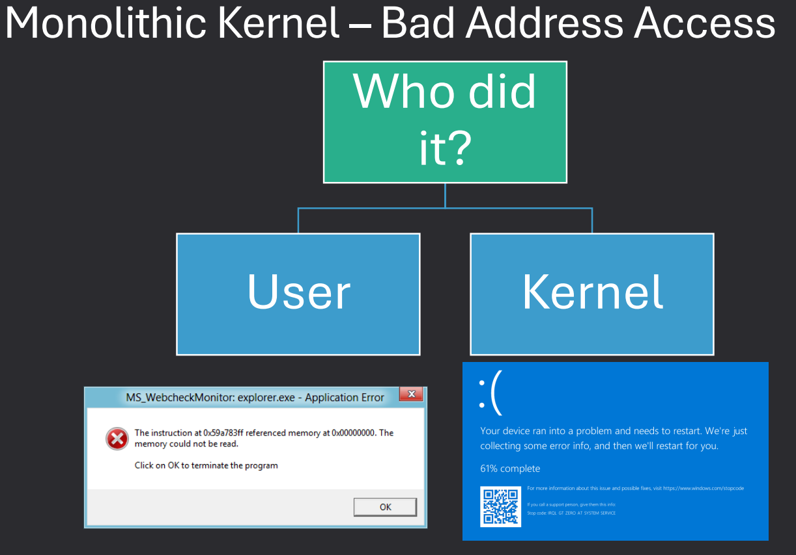
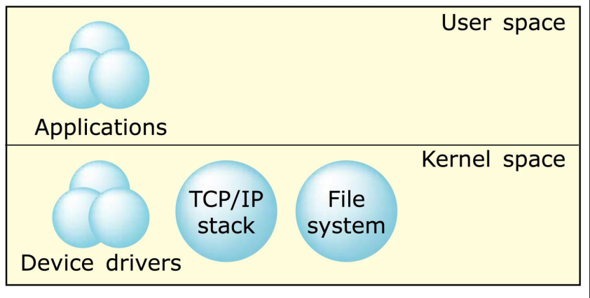
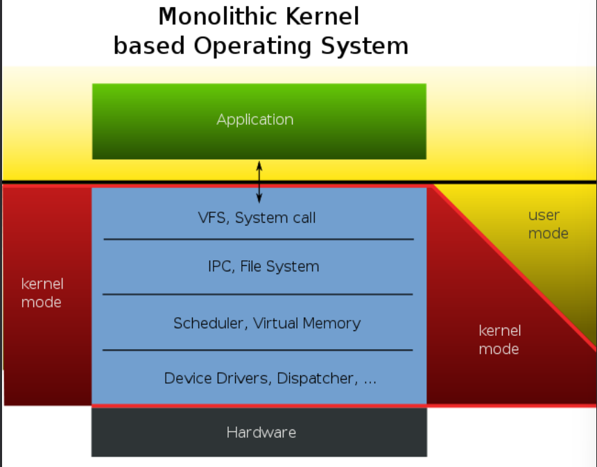
Microkernel
Pushes everything but the bare minimum into user space. Device drivers -> User Space and Memory Manager -> kernel. Allows for easier extension of OS. Examples: Minix, QNX
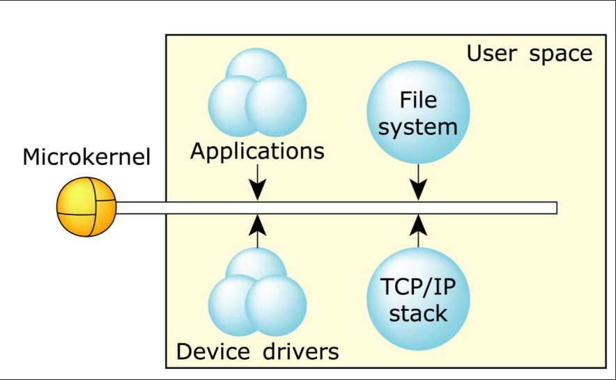
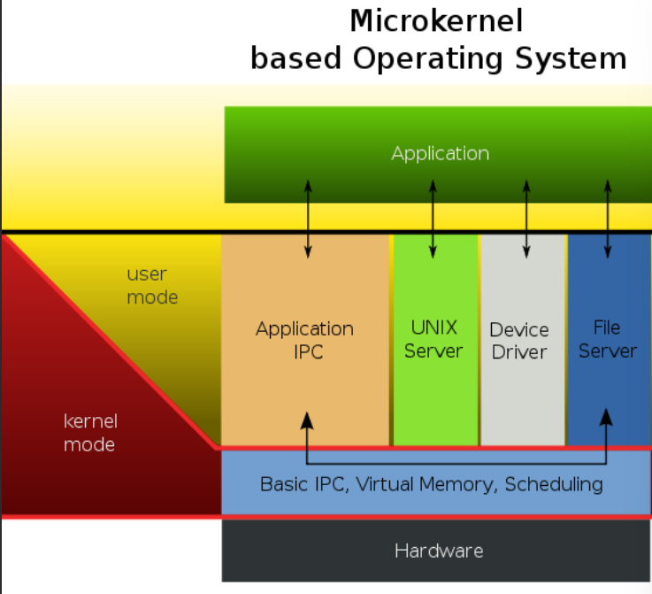
Hybrid Kernel
Combines aspects of monolithic and microkernel designs. Core services in kernel space, others in user space. Examples: Windows NT, macOS, Android
Loadable Kernel Modules
Modern OS (Windows, Mac, Linux) support some degree of loading into the kernel.
Called Loadable Kernel Modules (LKMs) in Linux.
Allow dynamic extension of kernel functionality without rebooting.
Examples: Device drivers, file systems, system calls, subsystems.
Reak-Time Operating System
Operating systems with deadlines for tasks. Hard -> MUST be met. Soft -> SHOULD be met but not critical.
- Hard RT - Airplanes, Cars, Robotics
- Soft RT - Video Streaming, Online Gaming, Multimedia
Device Operating Systems
Operating systems will vary in design based on the target device.
Examples: Windows (PCs), Android (Mobile), iOS (Apple Devices), Linux (Servers/Desktops).
Each type of device poses a different set of challenges and goals.
What's Covered? (Lecture 2)
- Computer Architecture
- Hardware
- Softwares Programming
- Virtualization
Computer Architecture
Operating System Services
Operating systems provide an environment for execution of programs and services to programs and users.
One set of operating-system services provides functions that are helpful to the user:
- User Interface - Almost all opertaing systems have a user interface (UI)
- Varies between Command-Line (CLI), Graphics User Interface (GUI), touch-screen, Batch
- I/O Operations - A running program may require I/O, which may involve a file or an I/O device
- Program execution - The system must be able to load a program into memory and to run that program, end execution, either normally or abnormally (indicating error)
- File-system manipulation - The file system is a repository of information. The operating system must provide functions to create files and directories, to delete them, to read and write data, and to search for files.
- Communications - In many systems, processes need to exchange information. This exchange may occur between processes executing on the same computer or between processes executing on different systems connected by a network.
- Error detection - Both the hardware and the software need to be able to detect and correct errors. The operating system needs to be aware of possible errors. For each type of error, OS should take the appropriate action to ensure correct and consistent computing
- Resource allocation - When multiple users or multiple jobs running concurrently, resources must be allocated to each of them. Many types of resources - CPU cycles, main memory, file storage, I/O devices.
- Logging - To keep track of which users use how much and what kinds of computer resources
System Boot
When a system powers on, execution begins at a fixed memory location.
The BIOS (or modern UEFI) finds a bootable device and loads a small bootstrap loader from ROM/EEPROM.
The loader locates and loads the kernel into memory, starting the OS.
Sometimes this uses a two-step process with a boot block on disk.
GRUB is a common loader that supports multiple kernels, disks, and boot options.
Boot loaders can also start the system in specific states, like single-user mode.
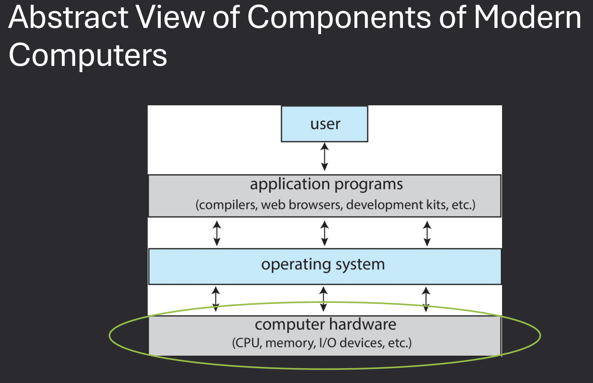
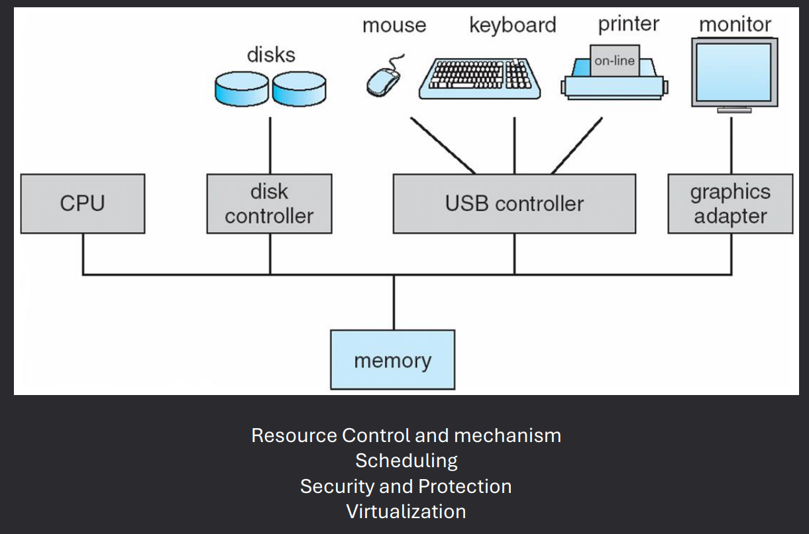
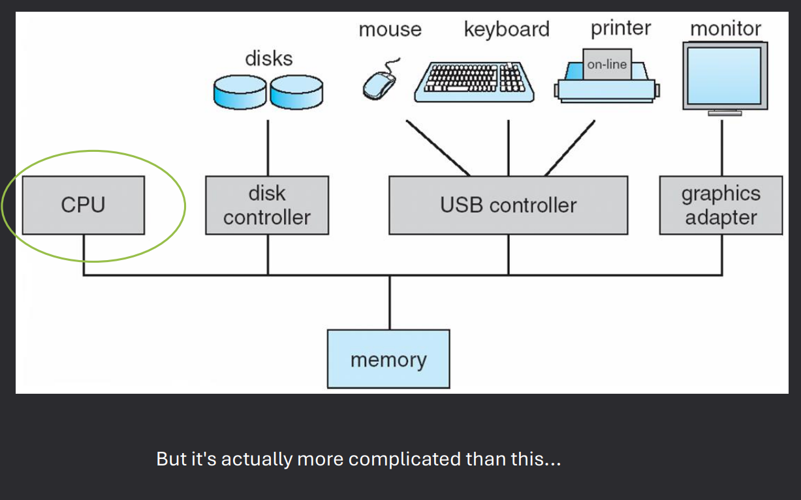
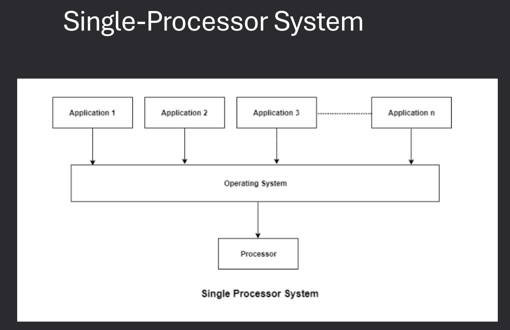
MultiProcessor/Parallel Systems
Multiprocessor systems (also called parallel systems) have two or more processors in close communication, sharing the computer bus, the clock, and sometimes memory and peripheral devices.
The main advantage of multiprocessor systems is their increased throughput and reliability.
Multiprocessor systems are classified into two categories: tightly coupled and loosely coupled.
- Tightly Coupled - Multiprocessor systems that share memory and a clock. Examples: Symmetric Multiprocessing (SMP), Asymmetric Multiprocessing (AMP)
- Loosely Coupled - Systems with multiple independent processors, each with its own memory and OS, connected via a network. Examples: Clusters, Grids
Caching
Cache is a smaller, faster memory that stores copies of frequently accessed data from main memory.
It reduces the time to access data and improves overall system performance.
Caches are organized in levels (L1, L2, L3) based on their proximity to the CPU.
Caches use various strategies for data management, including write-through and write-back policies.
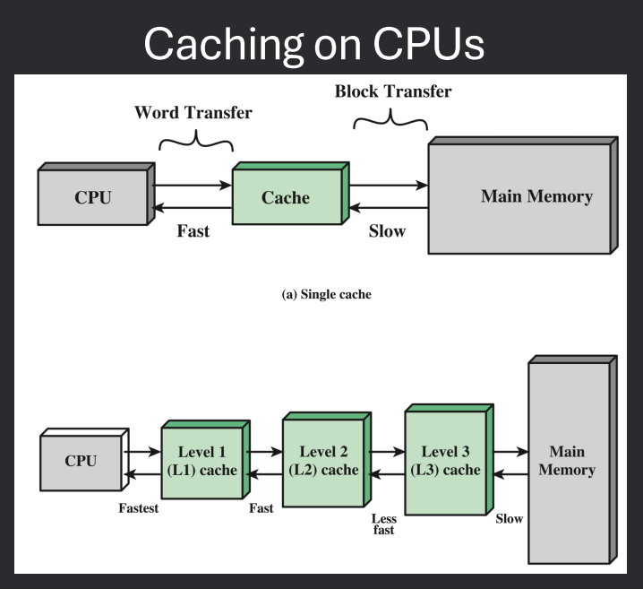
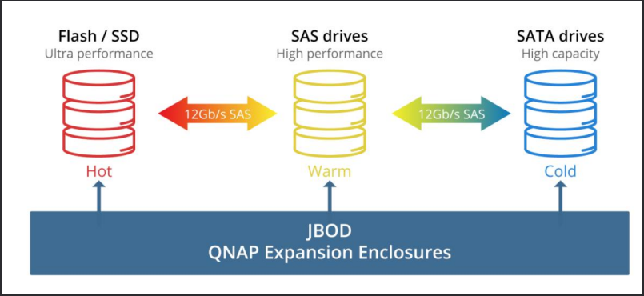
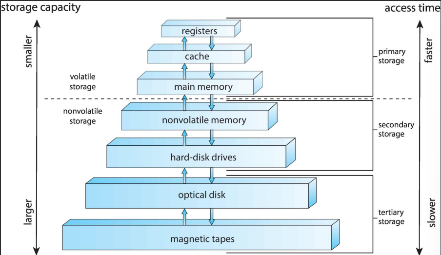
Command Line Interpreter
The command-line interpreter (CLI), or shell, is a program that reads and executes commands from the user.
It provides an interface for users to interact with the operating system by typing commands.
Examples include Bash (Linux), Command Prompt (Windows), and PowerShell (Windows).
The shell can execute built-in commands and launch other programs.
Graphical User Interface
A graphical user interface (GUI) allows users to interact with the operating system through graphical elements like windows, icons, and menus.
GUIs are more user-friendly than command-line interfaces, especially for non-technical users.
Examples include Windows Explorer (Windows), Finder (macOS), and GNOME/KDE (Linux).
GUIs often include features like drag-and-drop, context menus, and visual feedback.
Many operating systems support both CLI and GUI, allowing users to choose their preferred method of interaction.
Touchscreen Interfaces
Touchscreen interfaces are designed for devices with touch-sensitive screens, such as smartphones and tablets.
They allow users to interact with the operating system using gestures like tapping, swiping, and pinching.
Examples include iOS (Apple devices) and Android (various manufacturers).
Touchscreen interfaces often feature large icons and buttons for ease of use.
I/O Devices
Input/output (I/O) devices are hardware components that allow a computer to communicate with the external world.
Common input devices include keyboards, mice, and touchscreens, while common output devices include monitors, printers, and speakers.
The operating system manages I/O devices through device drivers, which are specialized programs that translate OS commands into device-specific operations.
Examples of I/O devices include:
- Input Devices: Keyboard, Mouse, Touchscreen, Scanner, Microphone
- Output Devices: Monitor, Printer, Speakers, Headphones
- Storage Devices: Hard Drive, SSD, USB Flash Drive, Optical Drive
- Network Devices: Network Interface Card (NIC), Wi-Fi Adapter, Router
Direct Memory Access (DMA)
Direct Memory Access (DMA) is a feature that allows certain hardware subsystems to access main memory independently of the CPU.
This improves performance by offloading data transfer tasks from the CPU, allowing it to focus on other processing tasks.
DMA is commonly used for high-speed data transfers, such as disk I/O and network communication.
The DMA controller manages the data transfer process, coordinating between the device and memory.
Interrupts
An interrupt is a signal sent to the CPU by hardware or software indicating an event that needs immediate attention.
When an interrupt occurs, the CPU temporarily halts its current operations, saves its state, and executes an interrupt handler to address the event.
After handling the interrupt, the CPU resumes its previous tasks.
Interrupts are essential for efficient I/O operations and real-time processing.
Types of interrupts include:
- Hardware Interrupts: Generated by hardware devices (e.g., keyboard, mouse, network card) to signal events like data availability or errors.
- Software Interrupts: Generated by software instructions to request system services or signal exceptions (e.g., division by zero).
- Maskable Interrupts: Can be ignored or delayed by the CPU using interrupt masking techniques.
- Non-Maskable Interrupts (NMI): Cannot be ignored and are used for critical events like hardware failures.
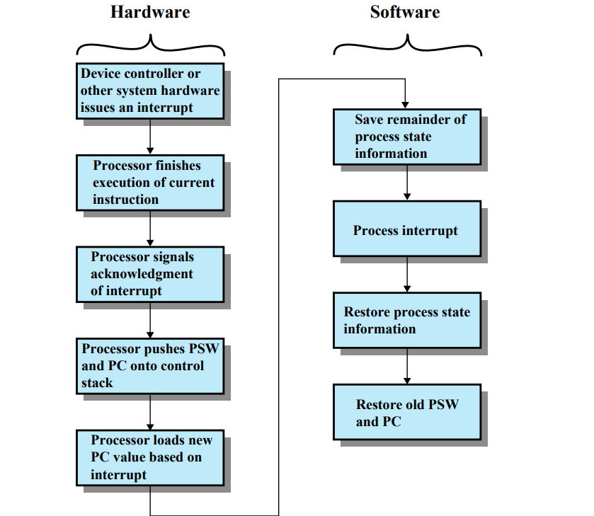
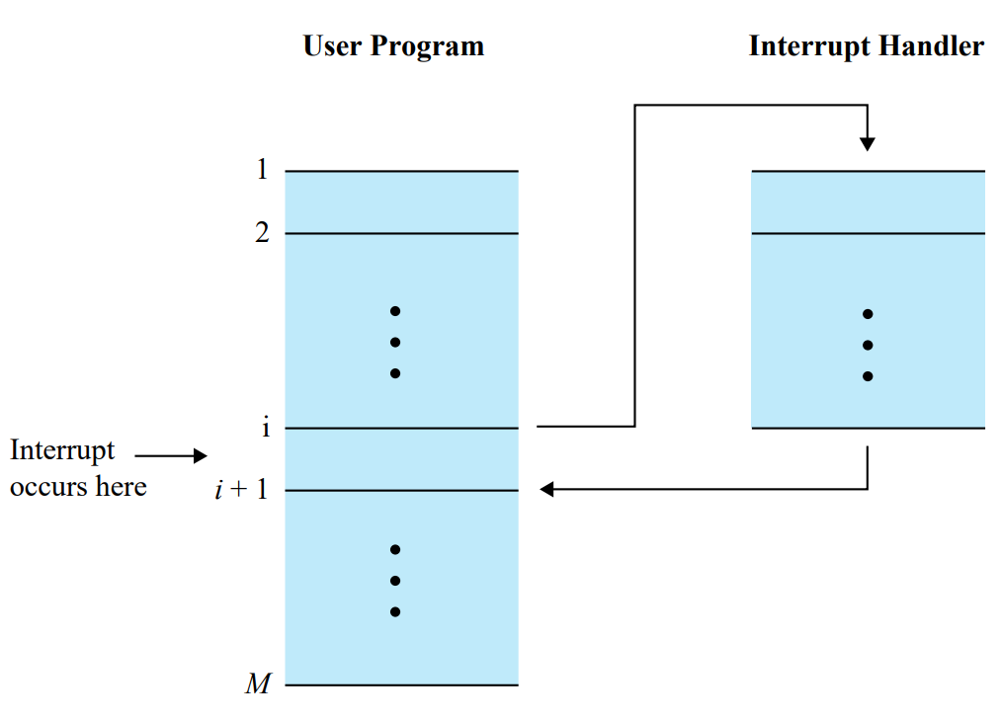
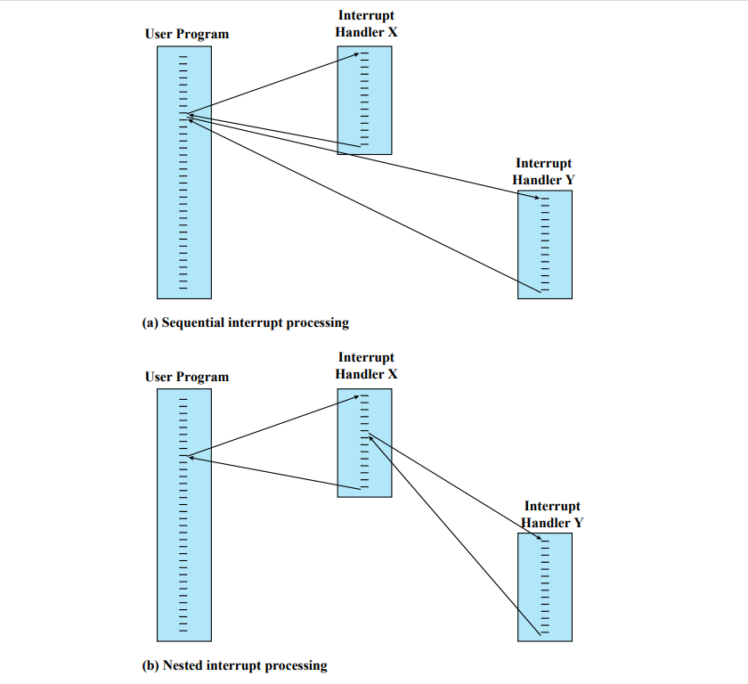
Security and Protection in Modern Computers
Modern computers implement various security and protection mechanisms to safeguard data and resources.
These include:
- CPU Protection
- Dual-Mode operation for CPU
- CPU Modes: User Mode and Kernel Mode to restrict access to critical system resources.
- Memory Protection: Prevents processes from accessing memory allocated to other processes.
- Goal - Protect OS from user-level software and support features like process scheduling